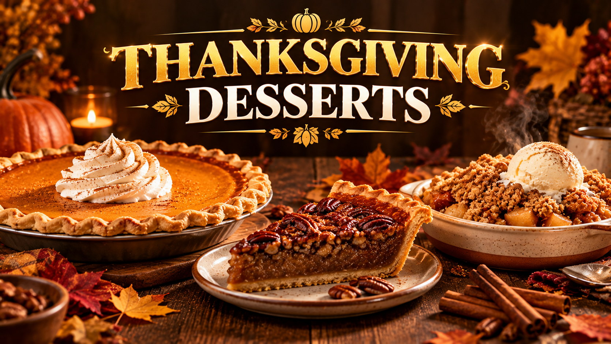

Thanksgiving Desserts 2026: Pies, Cakes & Sweet Recipes
Published October 12, 2026 · Updated October 12, 2026 · By EventBuzz Team

Thanksgiving 2026 falls on Thursday, November 26, and if your kitchen feels anything like ours, dessert is the part everyone talks about for weeks afterward. The turkey gets the applause at the table, but dessert is what people remember the next morning. This guide walks through the desserts that belong on a 2026 Thanksgiving table — the three classic pies, the make-ahead timeline that keeps baking day calm, no-bake options for crowded ovens, smart swaps for guests with dietary needs, and the little serving details that turn good dessert into a great one.
The Classics: Pumpkin, Pecan, and Apple Pies
Every Thanksgiving dessert table starts with the big three. A classic pumpkin pie is a smooth custard of pumpkin puree, eggs, cream, sugar, and the traditional spice blend of cinnamon, ginger, nutmeg, and cloves, baked in a flaky crust until just set with a slight jiggle in the center. The most common mistake is overbaking: the pie continues to set as it cools, so pull it when the edges are firm and the middle still wobbles slightly. Serve it barely warm or at room temperature with softly whipped cream. Using canned pumpkin is completely fine — it is more consistent than fresh, and almost every bakery in the country relies on it.
Pecan pie is the rich one: pecans folded into a caramel-like filling of corn syrup (or maple syrup), brown sugar, butter, and eggs. It is intensely sweet, which is why a small slice satisfies and why it pairs beautifully with unsweetened whipped cream or a scoop of vanilla ice cream to cut the richness. Toast the pecans lightly before adding them to deepen the flavor, and tent the pie with foil if the top browns too fast.
Apple pie is the crowd-pleaser that works for guests who are not pie purists. Use firm, tart apples — Granny Smith, Honeycrisp, or Braeburn — sliced evenly so they cook at the same rate. Pre-cooking the filling briefly on the stovetop prevents the dreaded gap between the fruit and the top crust that forms when raw apples shrink in the oven. A lattice top looks festive and lets steam escape, and a sprinkle of coarse sugar on the crust adds a bakery-style finish.
Cheesecakes, Cakes & Modern Alternatives
Not everyone wants pie, and a Thanksgiving table with only pies starts to look one-note. A pumpkin cheesecake bridges the gap — it honors the pumpkin tradition while giving cheesecake lovers their fix. Bake it in a water bath (wrap the springform pan tightly in foil) to prevent cracks, and cool it slowly in the turned-off oven with the door cracked for the smoothest top.
Other strong additions include apple cider donuts served warm as a casual option, a spiced layer cake with cream cheese frosting (carrot cake or apple spice cake), and individual dessert cups — mini trifles or parfaits that let guests sample without committing to a full slice. Trifles are especially practical: layer cubes of pound cake or brownies with pumpkin mousse or whipped cream and caramel in a clear bowl, and you have a stunning centerpiece dessert that takes twenty minutes of active work.
Your Make-Ahead Timeline: Two Weeks to Thanksgiving
The secret to a calm Thanksgiving kitchen is that almost every dessert component can be made ahead. Here is a timeline that works for Thursday, November 26, 2026:
- Up to 2 weeks before: make pie dough, wrap tightly in plastic, and freeze. Freeze any crumble or streusel toppings too. Unbaked fruit pies can be fully assembled and frozen — bake straight from frozen on the day, adding 20-30 extra minutes.
- 3-5 days before: bake and cool cheesecakes, then refrigerate. Bake spice cakes and freeze them unfrosted. Make pie fillings like pumpkin custard mix or caramel sauce and refrigerate.
- 2 days before: bake pumpkin and pecan pies — both taste better after a day in the fridge as flavors settle. Prepare trifle layers and refrigerate separately.
- Day before: bake apple pie (it is best within 24 hours for a crisp crust). Whip cream just before serving, or stabilize it with a little powdered sugar so it holds overnight.
- Morning of: assemble trifles, reheat fruit pies briefly (10 minutes at 350°F / 175°C) for that fresh-from-the-oven feel, and slice cheesecakes with a hot, dry knife for clean edges.
This schedule means the oven is free on Thanksgiving Day for the turkey and sides, which is the real reason make-ahead baking matters.
No-Bake & Easy Thanksgiving Desserts
If your oven is fully booked by the turkey, no-bake desserts save the day. A no-bake pumpkin cheesecake sets in the fridge using cream cheese, whipped cream, pumpkin puree, and gelatin — chill it overnight and top with gingersnap crumbs. Chocolate or caramel mousse in individual glasses looks elegant and takes fifteen minutes of active time. A cookie butter or speculoos icebox cake — cookies layered with whipped cream and refrigerated until the cookies soften into cake — feeds a crowd with zero oven time.
Other oven-free wins: candied nuts for nibbling or topping ice cream, a cranberry sauce parfait that uses up leftover cranberry sauce in a pretty glass, and a store-bought pound cake dressed up with warm caramelized apples on top. Nobody at the table can tell which desserts came from a hot oven and which did not, and nobody will care once they taste them.
Dietary Swaps: Gluten-Free, Dairy-Free & Sugar-Conscious
With a big guest list, someone at the table likely needs a dietary accommodation. The good news is that Thanksgiving desserts adapt well. For gluten-free guests, a flourless chocolate torte or a naturally gluten-free pecan pie filling in a store-bought gluten-free crust works beautifully — or skip the crust entirely and serve pumpkin custard baked in ramekins as individual pumpkin flans.
For dairy-free guests, coconut cream whips into a convincing whipped cream substitute, and most apple and pecan pie recipes work with coconut oil or a good dairy-free butter in the crust. For reduced sugar, an apple crisp with oats and a modest amount of maple syrup lets the fruit do the work, and dark chocolate bark with sea salt and dried cranberries satisfies the sweet craving with less sugar per serving. Label each dessert clearly on the table so guests can help themselves without having to ask — a small card next to each dish noting "gluten-free" or "contains nuts" is all it takes.
Serving Tips That Make Dessert Shine
- Slice pies with a hot, dry knife: dip a sharp knife in hot water, wipe it dry, and cut. Repeat between slices for clean edges on pumpkin and cheesecake.
- Serve fruit pies slightly warm: ten minutes in a moderate oven refreshes the crust without overcooking the filling.
- Offer two toppings, not five: one great whipped cream and one great vanilla ice cream cover every dessert on the table.
- Use small plates: dessert plates half the size of dinner plates encourage guests to try two or three desserts instead of committing to one big slice.
- Set up a self-serve station: arrange pies pre-sliced, toppings in bowls, and a stack of small plates so dessert runs itself while you sit down.
- Save a slice for breakfast: cold pumpkin pie the morning after Thanksgiving is a tradition in its own right — plan for leftovers deliberately.
Dessert is the final memory of the meal. Make one pie truly excellent rather than five merely good, and the table will remember it all year.
Frequently Asked Questions
What are the best Thanksgiving desserts?
The classics are pumpkin pie, pecan pie, and apple pie. Beyond those, pumpkin cheesecake, spice cake, apple crisp, and trifles are excellent additions that give guests variety.
Can I make Thanksgiving pies ahead of time?
Yes. Pumpkin and pecan pies taste better after a day in the fridge, so bake them 1-2 days before. Apple pie is best within 24 hours. Pie dough can be frozen up to 2 weeks ahead, and unbaked fruit pies can be frozen fully assembled.
How do I keep my pumpkin pie from cracking?
Do not overbake — pull the pie when the edges are set but the center still has a slight jiggle. Cool it gradually at room temperature, then refrigerate. A thin layer of whipped cream hides any minor cracks.
What no-bake desserts work for Thanksgiving?
No-bake pumpkin cheesecake, chocolate or caramel mousse in individual glasses, speculoos icebox cake, candied nuts, and cranberry sauce parfaits all work well and free up the oven for the turkey.
What can I serve gluten-free guests for Thanksgiving dessert?
Flourless chocolate torte, pumpkin custard baked in ramekins without a crust, or pecan pie filling in a store-bought gluten-free crust are all reliable options. Label the dish clearly.
When is Thanksgiving 2026?
Thanksgiving 2026 is on Thursday, November 26. Black Friday follows on Friday, November 27.
Conclusion
Thanksgiving dessert does not have to be stressful. Pick one or two classic pies, add one make-ahead or no-bake option for variety, and follow the timeline so nothing collides with the turkey. Accommodate your guests with one or two labeled swaps, slice cleanly, keep the toppings simple, and let dessert serve itself. The pie is not just the end of the meal — it is the memory people carry home.
More Thanksgiving help from EventBuzz:
Happy Thanksgiving — may your crusts be flaky and your pies perfectly set!
Thanksgiving Table Picks
Table decor and hosting essentials for a warm Thanksgiving 2026.


Prices shown at the time of publishing and can change. Links take you to AliExpress, where shipping and delivery details are shown.